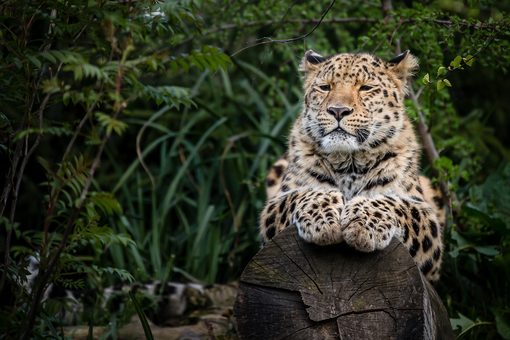
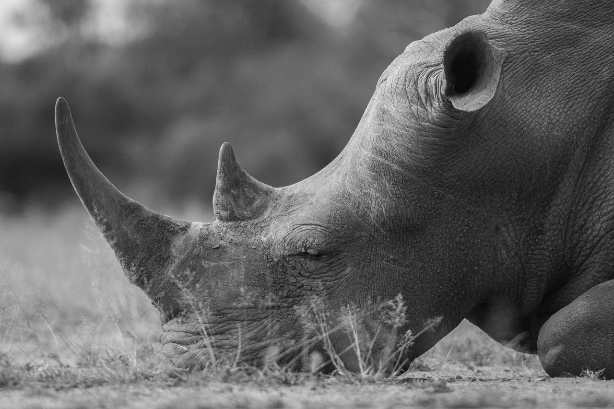
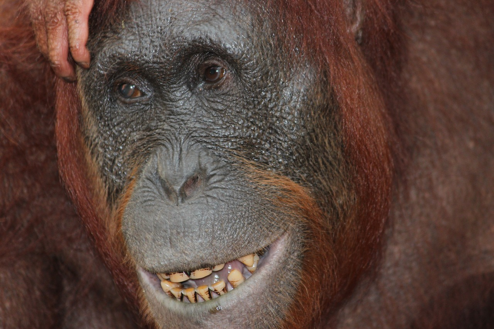
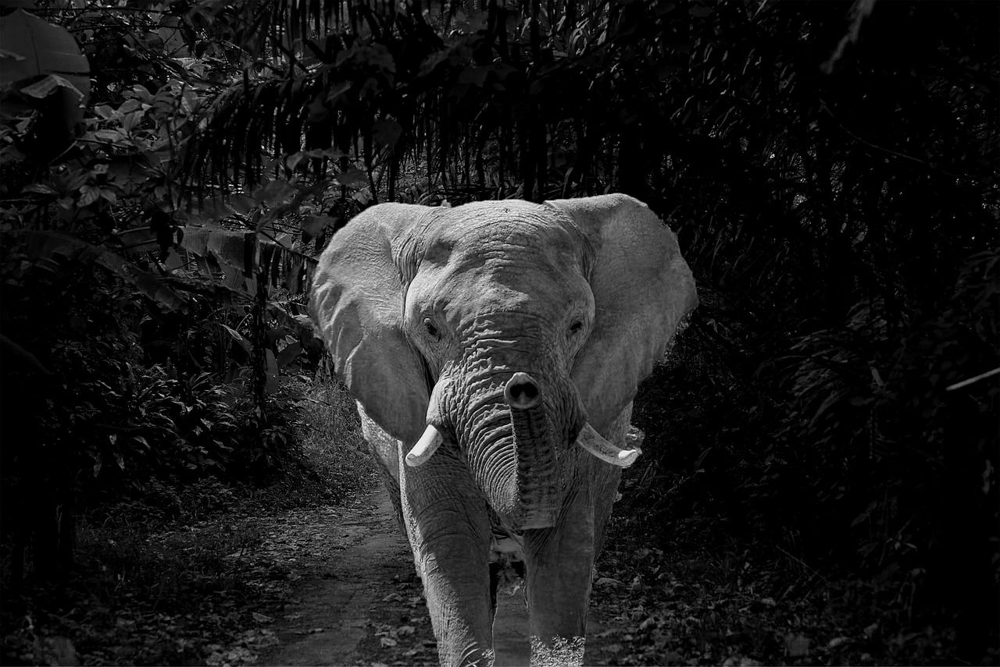
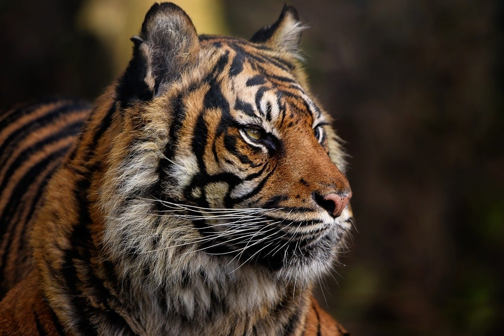

Nesli tükenmekte olan hayvanlar, doğada yaşamlarını sürdürmekte giderek zorlanan ve nesilleri tehdit altında olan canlı türleridir. Bu türlerin sayısı hızla azalmakta ve belirli bir noktada tamamen yok olma tehlikesiyle karşı karşıya kalmaktadır. Nesli tükenmekte olan hayvanların başlıca nedenleri arasında yaşam alanlarının tahribatı, iklim değişikliği, yasadışı avlanma, kaçak ticaret ve insan etkileşimi gibi insan faaliyetleri yer almaktadır.
Nesli tükenmekte olan hayvanlar, doğal ekosistemlerdeki dengenin önemli parçalarıdır ve ekosistemlerin işleyişini sağlayan önemli roller üstlenirler. Onların kaybı, diğer canlı türleri ve ekosistemleri de olumsuz etkileyebilir. Bu nedenle, nesli tükenmekte olan hayvanları korumak, doğal çeşitliliği ve ekosistem sağlığını sürdürmek için hayati bir öneme sahiptir.
Nesli tükenmekte olan hayvanların korunması için uluslararası ve yerel düzeyde birçok çaba gösterilmektedir. Doğal yaşam alanlarının korunması, yasadışı avlanmanın ve ticaretin önlenmesi, bilinçlendirme çalışmaları ve koruma programları bu mücadelede önemli rol oynamaktadır. Herkesin bu çabalara katkı sağlaması, nesli tükenmekte olan hayvanların geleceğini güvence altına almak için kritik bir adımdır.
Nesli Tükenmekte Olan Hayvanlar: Koruma İhtiyacı
Doğanın eşsiz güzelliklerine ev sahipliği yapan vahşi hayvanlar, gün geçtikçe tehdit altında. Nesli tükenmekte olan hayvanlar, önemli bir tehlike altındadır ve hayatta kalma mücadelesi vermektedirler. İnsan etkisiyle doğal yaşam alanları tahrip oluyor, iklim değişikliği onları zorluyor, yasadışı avlanma ve ticaretle karşı karşıyalar..
Bugün atacağımız adımlar, yarının hayvanları için umut olacaktır. Unutmayalım ki, onları koruyarak aslında kendi geleceğimizi de koruyoruz. Nesli tükenmekte olan hayvanlar için şimdi harekete geçme zamanı geldi.
Nesli Tükenmekte Olan Bazı Hayvanlar
Amur Leoparı
Nesli tükenmek üzere olan hayvanlar listesinde yer alan canlılardan biri, Amur leoparı. Rusya’nın doğu kesimlerinde yaşayan bu türün ne yazık ki yalnızca 120 üyesi kaldı. Bu nedenle Amur leoparları, “dünya üzerindeki en nadir kediler” arasında gösteriliyor. Bu canlıların nesli tükenmek üzere olan hayvanlar listesinde yer almasının temel sebebi ise kaçak avlanma ve orman tahribatı.
Siyah Gergedan
Ne yazık ki siyah gergedanlar, nesli tükenme tehlikesiyle karşı karşıya olan tek gergedan türü değil. Siyah gergedanlar gibi, Sumatra ve Javan gergedanları da yok olma tehlikesi altında. Ancak siyah gergedanların, varlıklarını devam ettirme mücadelelerinde diğer türlere kıyasla bir adım önde olduğu söylenebilir. Uluslararası Gergedan Federasyonu öncülüğünde yürütülen çalışmalar sonunda, siyah gergedanların nüfusu 2015 yılından bu yana yüzde 12 artmış durumda. Ancak Afrika’nın güney ve doğu bölgelerinde yaşayan bu canlılar için tehlike henüz ortadan kalkmış değil.
Borneo Orangutanı
Endonezya ile Malezya yakınlarındaki Borneo Adası, Borneo orangutanlarının doğal ve tek yaşam alanı. Borneo orangutanları ise nesli tükenme tehlikesiyle karşı karşıya olan çok sayıda orangutan türünden biri. Ağaçlarda yaşayan en büyük primat türlerinden biri olduğu bilinen Borneo orangutanlarının nüfusu geçtiğimiz 60 yılda yüzde 50 oranına azaldı. Bu keskin nüfus azalmasının birinci sebebi ise yasa dışı avlanma faaliyetleri.
Afrika Orman Fili
Batı Afrika’daki ormanlık bölgelerde yaşayan bu canlılar, yaşayan fil türleri arasında en küçük olanı. Ayrıca Afrika’daki iki fil türünden biri. Ancak ormansızlaşma ve yasa dışı avlanma yüzünden nesilleri tükenme tehlikesiyle karşı karşıya. Bugün, kaç Afrika orman filinin hayatta olduğu bilinmiyor. Ancak 2002’den bu yana nüfuslarının yüzde 60’tan fazla azaldığı tahmin ediliyor.
Sumatra Kaplanı
Endonezya’ya ait Sumatra Adası’nda yaşayan Sumatra kaplanı, ada üzerinde varlığını devam ettirmeyi başarabilen son kaplan türü. Fakat bu canlı türü de tamamen yok olmanın eşiğinde. Çünkü Sumatra kaplanın yaşamak için ihtiyaç duyduğu ormanlık alanlar büyük bir hızla tarım arazisi haline getiriliyor. Bu nedenle canlılar, ihtiyaç duydukları besinlere ulaşmakta büyük bir zorluk yaşıyor. Bunun yan sıra Sumatra kaplanlarının dünyanın farklı bölgelerine gönderilmek üzere yasa dışı bir şekilde avlandığı ve bunun da canlıların yaşamı üzerinde son derece olumsuz bir etkisi olduğu biliniyor.
Ve daha fazlası olduğunu bilmek daha da acı verici ·- Images by pixabay